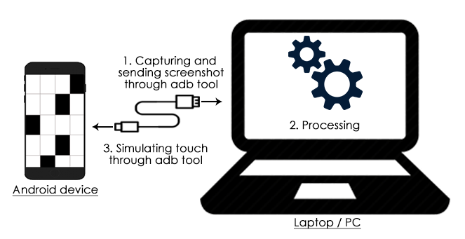

Using Image Processing
In this approach, we use a combination of image processing and ADB tool to automate the games.
Approach

Fig: The image depicts the block diagram of the approach using ADB tool and image processing for solving the games
We use ADB tool to take a screenshot of the phone screen and save it on the sdcard, and then use the next command to send over the image to the computer. Next, we use a set of image processing techniques to extract relevant features in the image that are required. Depending on the features, we can simuate the touch or swipe virtually using ADB tool.
We can run the above steps in a loop to automate a game that needs repetition or has multiple levels.
Advantages of this approach
- We can get direct screenshots of our android phone screen and hence accurate pixel values.
- Since we access the locations on the screen through their coordinates, we get accurate touch and swipe.
- There's no need to use an electronic circuit.
- Complex algorithms can be implemented efficiently in MATLAB.
- Everything happening on the screen is visible to us unlike in the case of electronic circuits where the screen could be covered with sensors.
Disadvantages of this approach
- Since ADB is taking the screenshots and sending it to laptop ,it requires some amount of time to perform that operation. Thus, its processing is slow of about some seconds.
Games which can be solved using ADB tool
The Android games 'Stick Hero' and 'Find the Difference' can be solved using this ADB tool because the game is not time bounded and virtual touch is good enough to play these games.